충남대학교 컴퓨터공학과 류재철 교수님의 "운영체제 및 실습" 강의를 필기한 내용입니다.
다소 잘못된 내용과 구어적 표현 이 포함되어 있을 수 있습니다.
Files
- File : 사용자가 만든 비트들의 모음
성질
- Long-term Existence : 오랫동안 보관되어야 함
- Shareable between Processes : 프로세스들이 공유할 수 있어야 함
- Structure : 확장자 얘기하는듯 - 여러 구조의 파일들을 잘 관리할 수 있어야 함
구성 요소
- Name : 파일의 이름
- 유닉스 시스템에서는 inode# 라는 정수형태로 파일의 이름을 저장한다
- Type : 확장자
- Location : 위치 - Block# 로 디스크에서의 위치가 저장된다
- Size : 파일의 크기
- Protection : 파일의 Log
- Creation : 생성
- Last Modification : 마지막 변경
- Last Use : 마지막 사용
- 위 세가지에 대해 Time, Date, *UID(User ID)*를 로그로 저장한다
Operation
- Create : 파일의 생성
- Delete : 파일의 삭제
- Open : 파일 열기
- Close : 파일 닫기
- Read : 파일 읽기
- Write : 파일 쓰기
- C언어에서는 open system call 이 create와 open 을 모두 책임진다
- 사용자가 파일 하나를 open하면 파일의 이름을 inode로 변환하고 그것을 이용해 Block# 를 알아낸 다음 메인 메모리로 갖고 올라와 read 혹은 write의 연산을 하고 끝나면 close를 통해 파일이 닫히는 구조이다
Structure - Database와 File System 의 차이점
- OS의 File System에서는 위에서 명시한 파일을 생성하고 삭제하고 열고쓰는 등의 Rough한 연산들만 지원한다
- 반면에 Database에서는 File의 내용, 즉, File의 Field(데이터베이스에서 Column을 말하는듯)와 Record(데이터베이스에서의 Row를 말하는듯)등의 File의 세부적인 내용을 관리하는 역할을 한다
UNIX File System
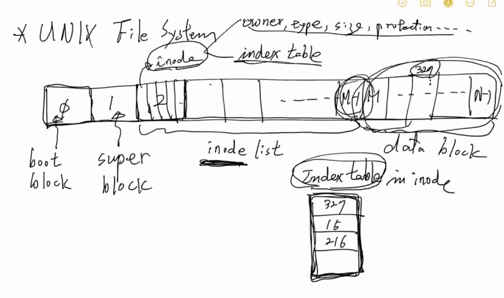
- 일단 디스크의 구조가 저렇게 n개의 블락으로 구성되어있다고 할 때
- 첫번째 블록을 Boot Block이라고 한다 - 얘는 처음 부팅할때 메인메모리에 들어가서 OS초기화하고 부팅작업을 하는데에 사용된다
- 그리고 두번째 블록을 Super Block이라고 한다 - 얘는 부팅 이후 메인메모리로 들어가서 전체적인 File System에 대한 정보를 OS에 제공해준다
- 그 이후 위의 예시에서 2~m-1까지를 inode list라고 한다
- inode list에는 inode들이 저장되고 블록보다는 사이즈가 작기 때문에 한 블록에 여러개의 inode가 저장되게 된다
- 따라서 하나의 시스템 안에 저장될 수 있는 파일의 갯수는 저 m에 달려있는 것이다
- 그 다음 m부터 n-1까지는 data block이라고 한다
- data block 은 파일의 실질적인 내용이 블럭단위로 잘려서 저장되게 된다
- inode는 파일 하나에 대한 정보를 저장하게 된다 - 프로세스에 PCB가 있었듯이 파일에는 inode가 존재하는 셈이다
- inode에는 다양한 정보들이 저장되는데 일단
- 위에서 말한 파일의 구성 요소인 name, type, size, location, protection과 파일의 주인인 owner가 들어간다
- 그리고 index table이 들어가게 되는데 이놈이 하나의 파일에 대한 내용을 블럭단위로 쪼개서 data block에 저장하게 되므로 그 블럭들이 data block의 어디에 존재하는지를 나타내는 테이블이다
- 위의 예시에서는 327, 15, 216이라고 돼있으므로 파일의 첫번째 블럭은 data block의 327에 가면 있다는 거고 두번째 블럭은 15, 마지막 블럭은 216에 가면 있다는 소리이다
- 따라서 파일 하나가 가질 수 있는 최대 크기는 index table에 달려있게 된다
- 그리고 한 파일이 열리면 그 파일에 대한 inode가 메인메모리로 올라가고, index table을 이용해 data block들도 하나씩 차례로 올라가게 된다
Index table
- index table의 구조를 조금 더 자세히 살펴보면 다음과 같다
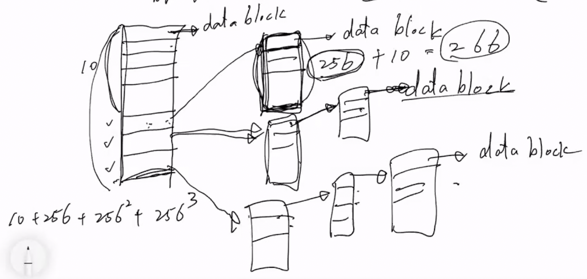
- 일단 index table의 일정부분은 바로 파일의 내용이 저장된 data block의 블럭으로 연결된다 - 여기를 direct block이라고 함
- 위의 예시에서는 10까지는 따라가보면 바로 파일의 내용이 나오게 된다는 소리이다
- 그리고 그 다음부터는 계층구조를 가지게 된다
- 이게 뭔말이냐면, index table에 적혀있는 block# 으로 가보면 해당 블럭에 들어있는 내용은 파일의 내용이 아니라 또다른 index table이 존재하는 것이다
- 즉, data block에 저장되어있는 블럭은 파일의 내용을 저장하는 블럭일 뿐만 아니라 index table일 수도 있다는 소리이다
- 따라서 인덱스 테이블에서 다시 또다른 인텍스 테이블로 움직이고, 거기서 파일의 내용이 저장된 블럭으로 이동하는 계층구조를 가진다
- 최상위 index table은 이렇게 일정구간은 바로 파일 내용 블럭으로 가지만 나머지는 차수가 점차 늘어나는 계층구조를 갖도록 되어 있다 - 이부분을 indirect block이라고 한다
- 즉, 위의 예시에서는 11번째 칸에는 또다른 index table의 위치가 저장되어있고, 그 index table에는 파일 내용 블럭의 위치가 저장된 1중 계층구조였다면,
- 12번째 칸에는 2중 계층구조, 13번째 칸에는 3중 계층구조로 되어있는 것이다
- 이때 data block에 저장된 index table의 크기가 256이라면, 하나의 파일은 10 + 256 + 256^2 + 256^3 개의 블럭에 나뉘어져 저장되는 셈인거다
- 보통 블럭 10개를 direct block으로 갖고 3개를 indirect block 로 1-Level, 2-Level, 3-Level 을 갖는 식으로 inode의 index table이 구성된댄다
Directory
- 일단 유닉스 시스템에서는 directory도 하나의 file로 취급한다
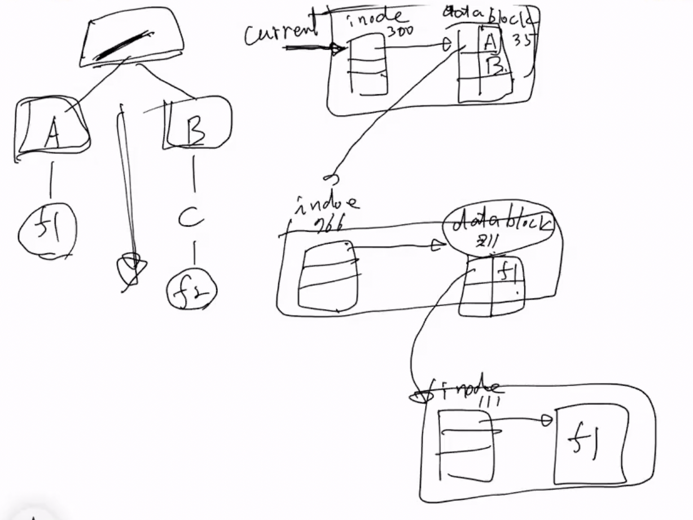
- 일단 현재 디렉토리(current directory)가 inode 300번이라고 해보자
- 그럼 거기의 index table을 통해 data block으로 간 결과가 그 옆의 column두개짜리 테이블이다
- 디렉토리이기 때문에 파일의 내용이 저렇게 2 column table로 나타나게 되고
- 이 2 column table에는 위의 예시에서는 오른쪽에는 해당 디렉토리에 들어있는 파일의 이름, 그리고 왼쪽에는 그 파일의 index# 가 저장된다
- 그리고 만약 내가 A라는 디렉토리로 가고 싶으면 A 옆의 inode로 들어가게 된다
- A의 inode가 766이라고 했을 때 해당 inode list의 원소로 가면 동일하게 A의 정보와 A의 내용을 볼 수 있다(index table을 이용해서)
- A의 내용을 보면 A 또한 디렉토리이기 때문에 2 column table을 볼 수 있고, A에는 f1이 들어있기 때문에 f1과 f1의 inode# 가 2 column table에 저장되게 된다
- 마찬가지로 f1의 inode# 인 111로 가면 거기에서 마찬가지로 index table을 이용해 f1의 내용을 볼 수 있는 것이다
- 따라서 핵심은 유닉스에서는 디렉토리도 file로 관리되어 inode가 존재하고, 디렉토리의 inode에 저장된 index table을 이용해 내용 블럭으로 가면 거기에는 해당 디렉토리의 하위 디렉토리 / 파일에 대한 ( 이름, inode# ) 들이 저장되어 있는 것이다 - 따라서 해당 inode# 을 쫒아가면 하위 디렉토리 / 폴더로 접근하게 되는 구조이다
File Directory Structure
- Single Level Directory : 한명의 유저와 하나의 current directory만을 지원해 모든 파일들이 다 같은 곳에 unique한 이름들을 가지며 존재하는 것
- Two Level Directory : 이제는 여러명의 유저와 하나의 current directory만을 지원해 파일들이 하나의 유저한테 속하여 존재하는 구조 - 한 유저 안에서는 unique한 이름을 가져야 되지만 유저가 다르다면 이름이 중복되어도 된다
- Tree Structured Directory : 일반적으로 우리가 생각하는 디렉토리의 구조 여러명의 유저가 있고 한 유저 안에서도 여러개의 디렉토리, 디렉토리 안의 디렉토리를 생성해 트리구조로 디렉토리들이 형성되는 것
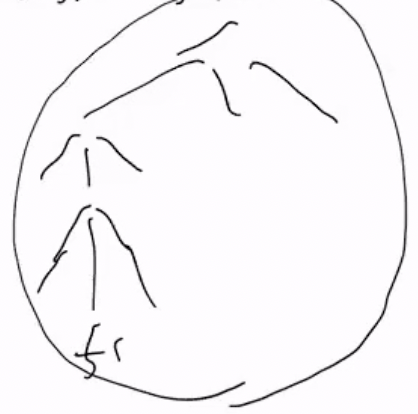
- Acyclic Graph Directory : 얘도 동일하게 트리구조를 갖지만 트리구조에서는 할 수 없는 공유의 개념이 가능한 구조이다 - 파일 하나를 여러명의 유저가 공유할 수 있는 구조
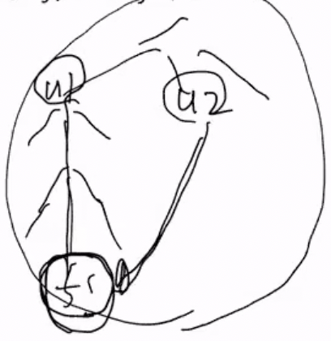
File Sharing System
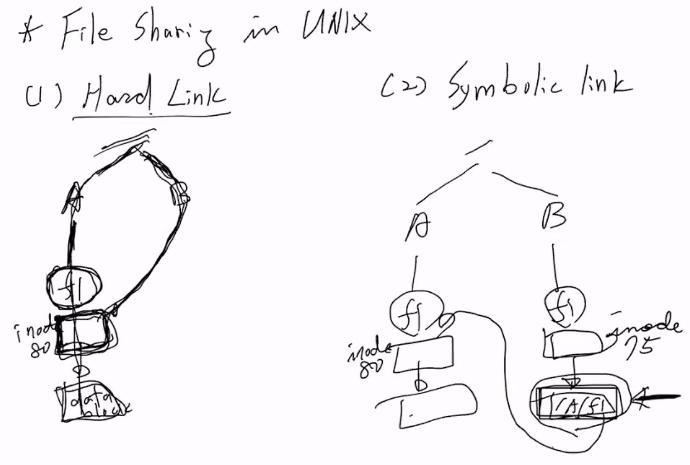
- Hard Link : 공유파일에 대해 하나의 inode와 data block을 두 디렉토리 / 유저가 공유하는 형태이다
- inode와 data block을 하나씩 사용하기 때문에 resource를 적게 사용한다는 장점이 있다
- Symbolic Link : 얘는 두 디렉토리 / 유저가 각각 하나씩 공유파일에 대한 inode와 data block을 갖고있고 둘 중 하나의 data block에 나머지 하나의 inode의 경로가 적혀있는 형태이다
- 얘는 inode와 data block이 더 필요하므로 resource를 더 많이 먹는다는 단점은 있지만, network를 사용해서 파일을 공유한다거나 하는 등의 더 강력한 파일 공유를 지원할 수 있다 - 그냥 파일의 경로만 data block에 적어주면 되므로
File Allocation
- inode에서 쓰는 index table방식 말고 다른 방식의 data block을 찾아가는 방식들
Contiguous File Allocation
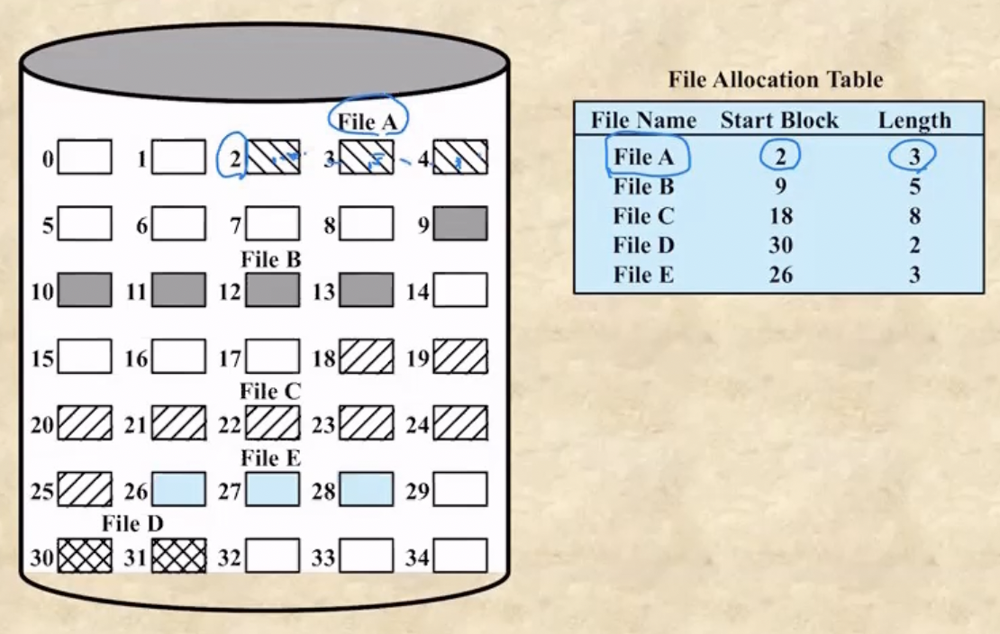
- Contiguous File Allocation : 얘는 data block을 연속적으로 디스크에 배치한 뒤, 시작블럭과 갯수를 File Allocation Table에 저장하는 방식이다
- 이놈의 단점은 일단
- 마지막 data block 뒤에 다른 파일의 data block이 들어있으면 그자리를 사용하지 못하므로 파일의 크기가 커졌을 때 대처할 수 없다는 것과
- 파일이 삭제되어 data block들을 삭제했을 때에 External Fragmentation이 일어난다는 것이다
- 옛날 windows xp가 이런 방식으로 작동해 external fragmentation 들을 모으는 조각 모음(compaction) 이 있었던 것이다
Chained Allocation
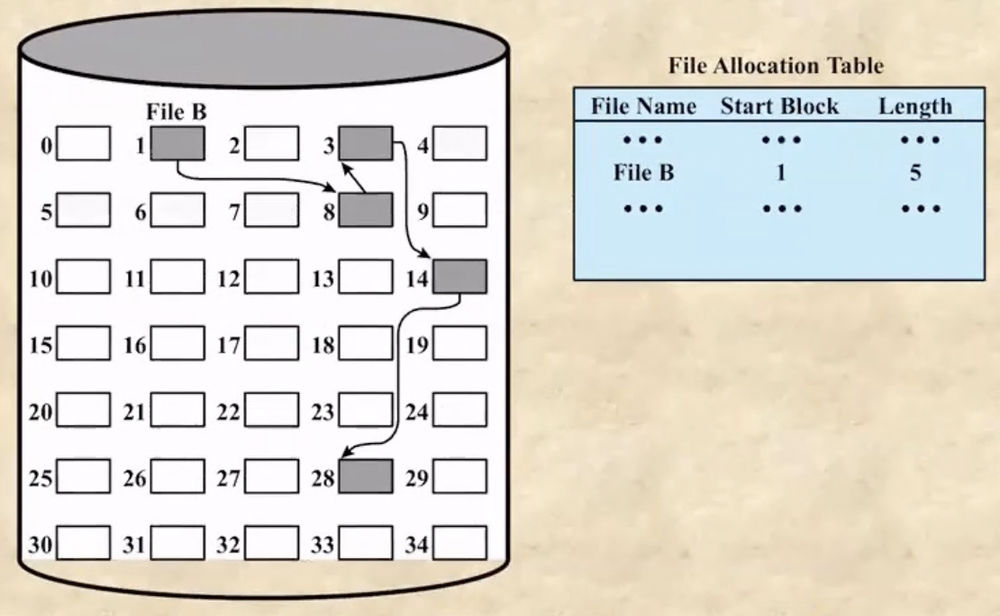
- Chained Allocation은 Linked List마냥 다음 data block의 위치를 data block의 마지막에다 저장해서 찾아가도록 하는 구조이다
- 단점은 당연히
- pointer를 잃어버리면 파일이 날라가는 문제가 발생한다는 것과
- 파일의 특정 지점을 읽으려면 그곳까지 datablock을 차례로 들러야 하기 때문에 오래걸린다는 것이다
- 이것을 해결하기 위해 FAT(File Allocation Table) 라는 것을 이용한다.
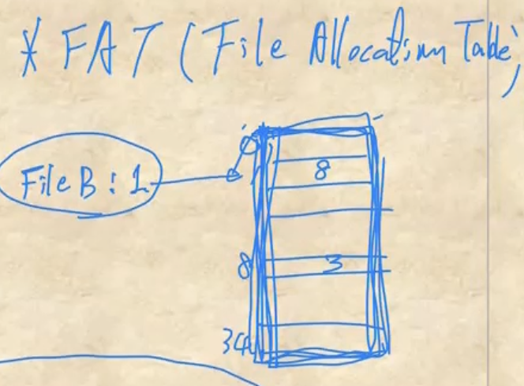
- 얘는 여기저기 흩어져있는 포인터를 하나의 테이블에 모은 것으로, ( Block# , next Block# )을 저장하는 테이블이다
- 포인터를 잃어버리지 않는다는 것과 이것이 특정 위치로 갈때 블락들을 찾는게 아닌 이 테이블만 읽으면 되니까 훨씬 더 빠르다는 장점이 있지만
- 디스크의 사이즈가 커지면 FAT도 너무 커진다는 단점도 존재한다
Index Allocation with Variable-Length Portions
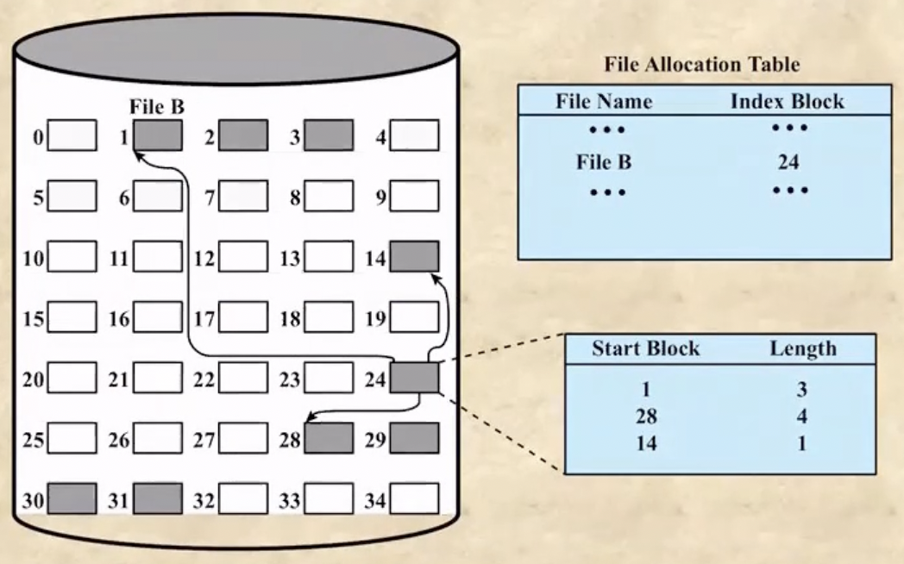
- Index Allocation with Variable-Length Portion은 index table개념과 contiguous allocation 개념을 합친거다
- 즉, index table을 사용하되 연속된 블럭을 하나의 행에 저장하는 방법 - (start block, lengh)를 저장한다
Free Block Management
- 비어있는 블럭을 관리하는 방법
Bit table
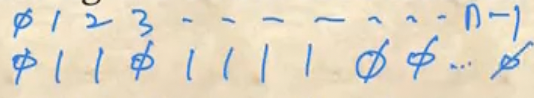
- Bit Table은 모든 Block# 에 하나씩 비트를 할당한 테이블로 이 비트를 이용해 해당 블럭이 비었는지 아닌지를 표시하는 방법이다
Chained Free Portions
- Chained Free Portions는 Free block들을 Linked List처럼 이어놓은 형태이다
Indexing
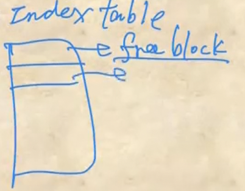
- Indexing은 table 하나를 만들어서 거기에 free block의 block# 를 다 저장하는 방법이다
- 얘는 크기가 디스크의 블락의 갯수랑 같을 필요는 없다
- free block의 갯수가 table의 갯수보다 클때는 일단 table을 다 채워놓고서 table에 들어있는 free block들이 다 사용되고 나면 다시 하드를 조사해 free block들을 채우면 되기 때문
- 즉, 디스크의 모든 free block을 아는것이 중요한게 아니기 때문에 몇개를 채워놓고 다쓰면 다시 채우고 하는 방식으로 작동하게 된다